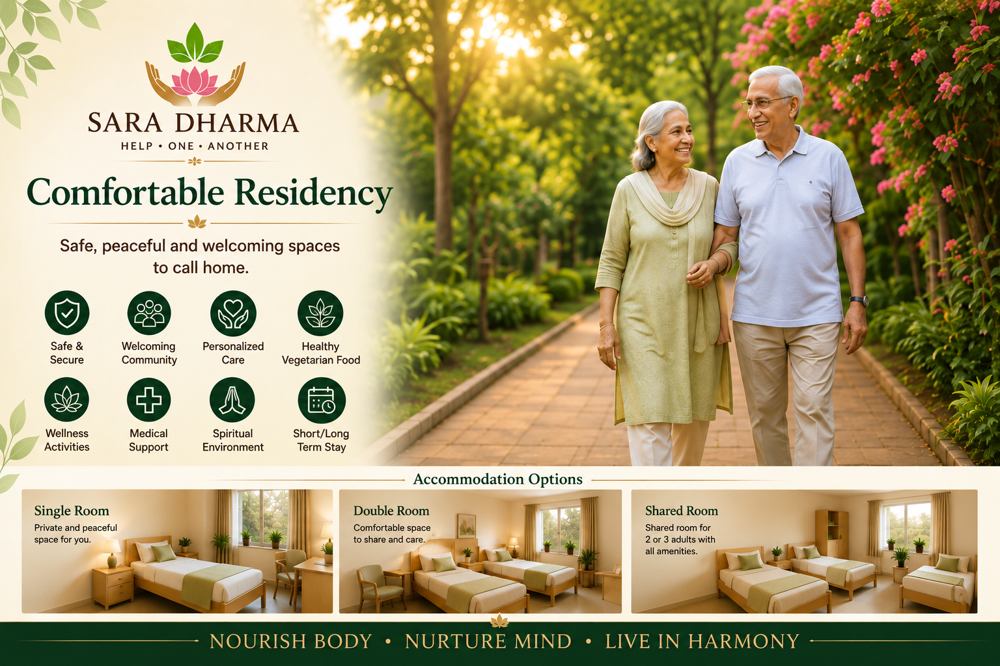

Single Occupancy
Private rooms offering comfort, privacy and personal space.

SaraDharma offers a peaceful residential environment designed for older adults who value independence, companionship, comfort and holistic well-being.
Private rooms offering comfort, privacy and personal space.
Well-appointed rooms for couples wishing to continue living together.
Shared accommodation for two or three residents in a friendly community setting.
Residency is intended primarily for senior citizens seeking a safe, caring and value-based community. Subject to availability and the admission process, SaraDharma may also consider couples, co-living partners and other individuals whose needs align with the community's mission.
Residents are encouraged to participate in yoga, meditation, devotional activities, gardening, reading, community events and voluntary service. Our goal is to foster meaningful relationships and purposeful living.